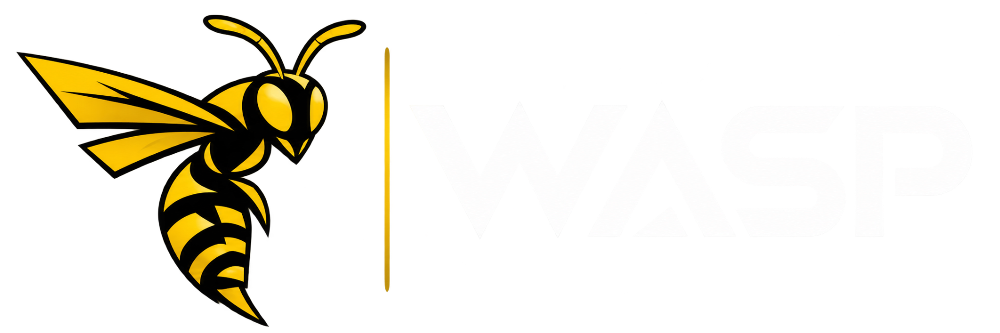
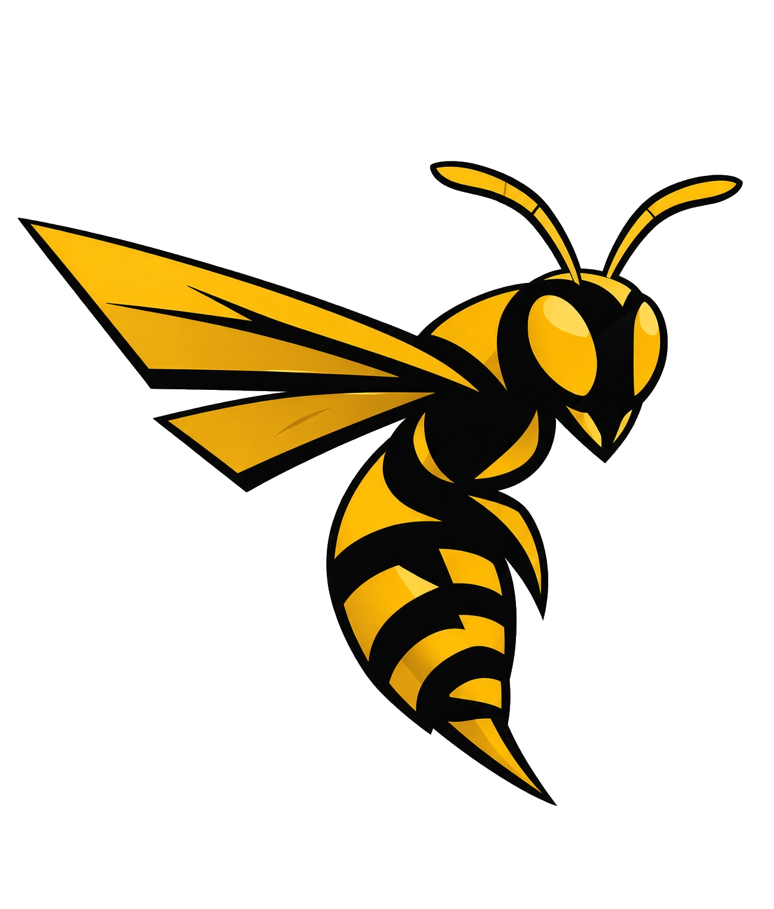
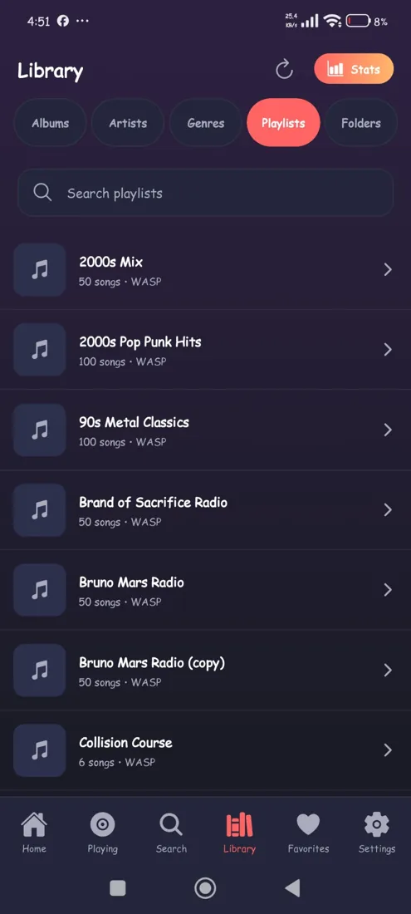

Play without signing in
Browse and listen to publicly shared music directly in the web player. No account required to start exploring; accounts unlock personal features.
playy.online / latest project · ongoing development
WASP is a self-hostable, peer-to-peer music webapp. Discover tracks across connected WASP servers, build playlists, listen instantly as a guest, or bring your own music library into the network.


WASP HIVEConnected peersBrowse and listen to publicly shared music directly in the web player. No account required to start exploring; accounts unlock personal features.
Explore permitted libraries across connected WASP hosts. The network can grow without putting every MP3 on a single central server.
Explore albums, artists and tracks; create playlists, discover public playlists and save music you want to hear again.
Follow recently listened tracks and anonymous current streaming activity where supported. No listener names are needed.
Connect a supported Android or iOS Subsonic/OpenSubsonic client through WASP's optional Mobile Bridge instead of installing a dedicated WASP app.
Deploy on Cloudflare Workers or Docker / Portainer. Upload music or index an existing host folder on Docker, then decide whether to share your library.
Start with a song. Stay for the network.
WASP's public browser player is open to guests. Search the available music, open a shared playlist and enjoy the stream without signing in. Create an account when you want to manage your playlists, preferences and publishing options.
WASP Mobile Bridge · v16
There's no separate WASP mobile app to install. WASP offers a Subsonic/OpenSubsonic API compatibility layer so third-party mobile players can browse supported music and playlists through the same native WASP backend.
Android integration has been demonstrated for sign-in and playlist browsing. Compatibility, peer playback, and artwork behavior continue to be tested and refined.

Playlists from your own WASP server and permitted network sources can appear inside compatible music players.
Illustration uses an actual Android client screenshot. The player's interface is its own, not part of the WASP webapp.
WASP speaks the Subsonic/OpenSubsonic API through its optional Mobile Bridge, so you can choose a compatible Android music client. Subsonic Player comes first because it's the app used in our WASP integration tests. Other apps below are from the Airsonic client directory. Client-specific features and compatibility vary.
Our Android test client for connecting to WASP Mobile Bridge and browsing server/user/peer playlists. The app is developed by SirFoxior; this is distinct from the older official Subsonic Music Streamer app. Some advanced features are Navidrome-specific and may not work with WASP yet.
Open-source Android Subsonic player, useful for testing standard playlists, searches and streaming.
Established Subsonic client featuring offline caching and playlist controls. Some distributions and versions may be older.
The original Subsonic Android app by Sindre Mehus. Different from the Subsonic Player tested with WASP.
Deploy WASP through Cloudflare Workers, or self-host using Docker / Portainer on a server or NAS. Use the project documentation to configure storage and credentials securely.
Upload tracks via WASP, or index an existing folder when using Docker. Decide what your server shares; keep your installation and administrator access secure.
Register on official WASP, request the ability to publish peer links, and submit your public HTTPS server URL through Account Settings → Publish after an administrator enables the permission.
Member-submitted links become peer candidates and require individual publishing permission from the official WASP administrators. Your server must be reachable and configured to share its library. Please share only music you're authorized to make available.

Visit the official website, start listening, explore the source, or contribute a WASP server of your own. Every trusted, reachable peer can help expand the music people discover.
WASP is an active project, not a finished commercial music service. Bugs and incomplete client integrations are expected, and new features, refinements and fixes are being worked on continuously. Some peers and mobile apps may not support every feature. If you find a bug or want to contribute, visit the GitHub issue tracker.